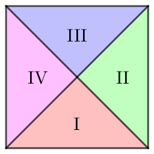

平面直角坐标系上有 $n$ 个正方形，这些正方形的所有顶点都在整点上，这些正方形分为两类：
求所有正方形的并的面积。
第一行包含一个正整数 $n$ ($n \leq 2 \times 10^5$)，表示正方形的个数。
接下来 $n$ 行，每行描述一个正方形，格式如下：
A xj yj aj ($-1000 \leq x_j, y_j \leq 1000; 2 \leq a_j \leq 1000; 2 \mid a_j$) 描述一个中心为 $\left( x_j, y_j \right)$，边长为 $a_j$ 的 A 类正方形。B xj yj dj ($-1000 \leq x_j, y_j \leq 1000; 2 \leq d_j \leq 1000; 2 \mid d_j$) 描述一个中心为 $\left( x_j, y_j \right)$，对角线长度为 $d_j$ 的 B 类正方形。输出一行一个实数，表示所有正方形并的面积，保留两位小数。可以证明答案最多包含两位小数。
先考虑只有 A 类正方形的情形。
此时扫描线当然是可以做的，但是这种做法到有两类正方形时就会非常麻烦。
我们注意到这些坐标 ($x, y$) 和正方的大小 ($a, d$) 是不大的，因此我们可以考虑将这些矩形 "嵌入" 到一个数组中。
即，由于所有 A 类正方形一定在正方形 $\left[ -1500, 1500 \right] \times \left[ -1500, 1500 \right]$ 中，且顶点都在整点上，因此我们可以用一个二维数组 $a_{i, j}$ 记录对每个 $i, j$，子正方形 $\left[ i, i + 1 \right] \times \left[ j, j + 1 \right]$ 是否被完全覆盖。
于是每个正方形对 $a_{i, j}$ 的贡献就是一个子矩形或 ($\mathrm{or}$) 操作，当然为了方便可以直接改成子矩形加操作然后判非 $0$ (即用 $a_{i, j}$ 记录覆盖多少次)。
因此只需要实现一个子矩形加操作。可以使用先差分再前缀和的方法，于是复杂度就变成了 $O \left( n + W^2 \right)$ ($W$ 为坐标范围)。
考虑加入了 B 类正方形的情形，此时经过分析可知所有可能出现的对角线一定是 $x \pm y + c = 0$ ($c \in \mathbb Z$) 的形式。
并上所有 $x = a, y = b$ ($a, b \in \mathbb Z$) 的直线，则每个单位正方形被分成了如下图所示的四个小三角形区域。
不难发现，每个小三角形区域要么被完全覆盖 (贡献 $\dfrac 14$ 的面积)，要么没有被覆盖 (不产生贡献)。因此答案就等于被覆盖的小三角形区域的总数 $\times \dfrac 14$。(这也说明了为什么答案至多包含两位小数)
于是我们只需枚举每个小区域 $r$ 判断它是否被覆盖即可。首先 $r$ 一定在唯一一个单位正方形中，同时，如果而我们把所有 $x \pm y + c = 0$ 的直线取出来，也会得到一个网格 $Mesh$，我们可以使用和 A 类的方法记录 $Mesh$ 中每个小方格是否被覆盖。
这样 $r$ 也一定含于唯一一个 $Mesh$ 中的小正方形。因此一个小区域 $r$ 可以对应到一个单位正方形 $u$ 和 $Mesh$ 中的正方形 $v$。那么 $r$ 被覆盖当且仅当 $u$ 被覆盖或 $v$ 被覆盖。
在计算 $M_2$ 的时候需要一些适当的坐标旋转 —— 就像 Manhattan 距离和 Chebyshev 距离互转一样 —— 最后再做前缀和。
总时间复杂度不变，仍为 $O \left( n + W^2 \right)$。
#include <bits/stdc++.h>
using std::cin;
using std::cout;
typedef std::pair <int, int> pr;
const int N = 1501;
int a[2 * N][2 * N], b[4 * N][4 * N];
int main() {
int i, j, n, x, y, z, A = 0; char ty;
std::ios::sync_with_stdio(false), cin.tie(NULL);
cin >> n;
for (i = 0; i < n; ++i)
if (cin >> ty >> x >> y >> z, z >>= 1, ty == 65)
x += N, y += N,
++a[x - z][y - z], --a[x - z][y + z], --a[x + z][y - z], ++a[x + z][y + z];
else
std::tie(x, y) = pr(x - y + 2 * N, x + y + 2 * N),
++b[x - z][y - z], --b[x - z][y + z], --b[x + z][y - z], ++b[x + z][y + z];
for (i = 0; i < 2 * N; ++i) for (j = 1; j < 2 * N; ++j) a[i][j] += a[i][j - 1];
for (i = 1; i < 2 * N; ++i) for (j = 0; j < 2 * N; ++j) a[i][j] += a[i - 1][j];
for (i = 0; i < 4 * N; ++i) for (j = 1; j < 4 * N; ++j) b[i][j] += b[i][j - 1];
for (i = 1; i < 4 * N; ++i) for (j = 0; j < 4 * N; ++j) b[i][j] += b[i - 1][j];
for (x = -1500; x < 1500; ++x)
for (y = -1500; y < 1500; ++y)
if (a[x + N][y + N]) A += 4;
else A +=
!!b[x - y + 2 * N ][x + y + 2 * N ]
+ !!b[x - y + 2 * N ][x + y + 2 * N + 1]
+ !!b[x - y + 2 * N - 1][x + y + 2 * N ]
+ !!b[x - y + 2 * N - 1][x + y + 2 * N + 1];
cout << std::fixed << std::setprecision(2) << A * .25 << '\n';
return 0;
}
坑1：坐标变换时注意一些边界情形 ($\pm 1$ 等)，不要处理错了。
坑2：注意变换后网格 $Mesh$ 的大小可以达到 $\left[ -3000, 3000 \right] \times \left[ -3000, 3000 \right]$ 因此至少需要开 $6000 \times 6000$ 的数组。